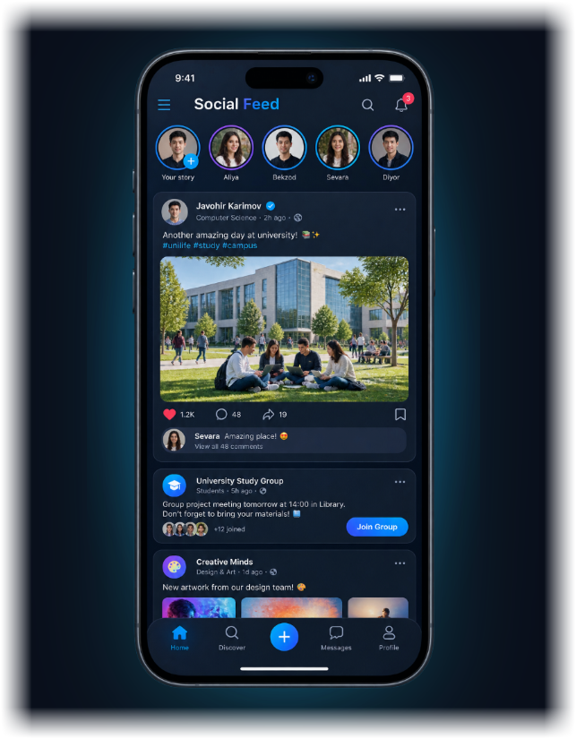
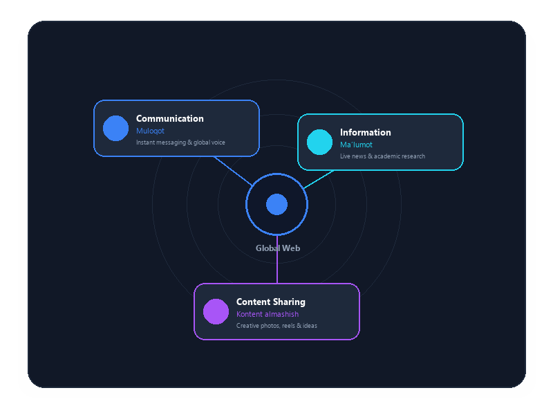
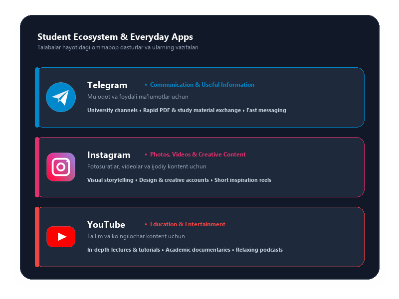
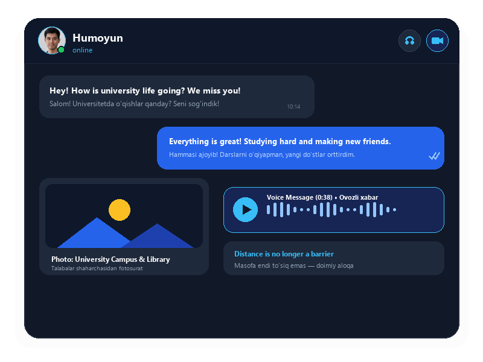
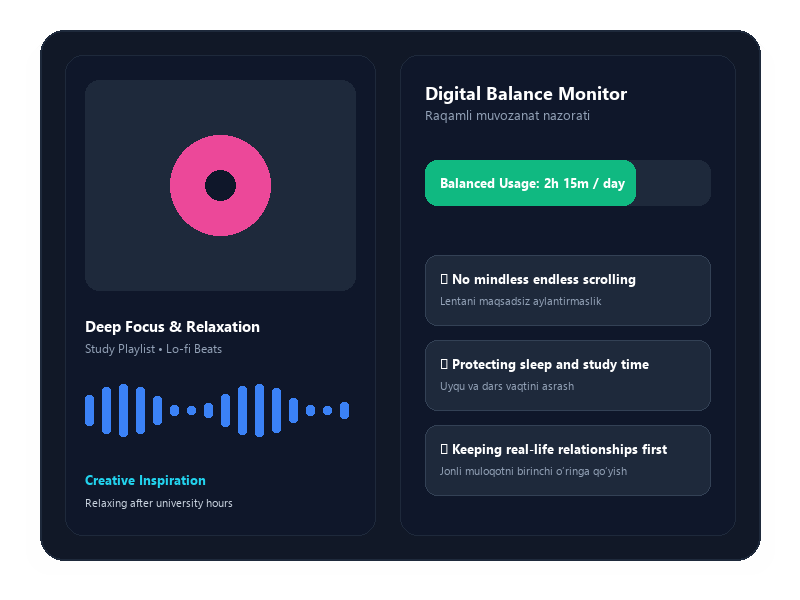

Social Networks
in My Life
Ijtimoiy tarmoqlar mening hayotimda
How social media shapes the way we communicate, learn and live
Ijtimoiy tarmoqlar muloqot, ta’lim va turmush tarzimizni qanday shakllantiradi

What Are Social Networks?
Ijtimoiy tarmoqlar nima?
Social networks are online platforms where people can communicate, share information and create content. They have become an important part of modern life.
Ijtimoiy tarmoqlar — odamlar muloqot qilishi, ma’lumot almashishi va kontent yaratishi mumkin bo‘lgan onlayn platformalardir. Ular zamonaviy hayotning muhim qismiga aylandi.
1. Communication
Muloqot — connecting instantly with friends and family
2. Information
Ma’lumot — accessing news, updates and global awareness
3. Content sharing
Kontent almashish — publishing creative photos, videos and ideas

Social Networks I Use
Men foydalanadigan ijtimoiy tarmoqlar
Examples commonly used by students / Talabalar hayotidan misollar
Commonly used platforms in student life:
Talabalar hayotida keng qo‘llaniladigan platformalar:
Telegram
communication and useful information
muloqot va foydali ma’lumotlar uchun
photos, videos and creative content
fotosuratlar, videolar va ijodiy kontent uchun
YouTube
education and entertainment
ta’lim va ko‘ngilochar kontent uchun

Why Do I Use Social Networks?
Nega ijtimoiy tarmoqlardan foydalanaman?
I use social networks for several reasons. They help me communicate with other people, find useful information, learn new things and relax in my free time.
Men ijtimoiy tarmoqlardan bir nechta sabablar tufayli foydalanaman. Ular menga boshqa odamlar bilan muloqot qilish, foydali ma’lumot topish, yangi narsalarni o‘rganish va bo‘sh vaqtimda dam olishga yordam beradi.
Communication
Muloqot
Staying in close touch with friends, family, and classmates seamlessly.
Do‘stlar, oila va kursdoshlar bilan muntazam aloqada bo‘lish.
Information
Ma’lumot
Discovering latest news, campus alerts, and world events.
Yangiliklar, universitet e’lonlari va jahon voqealarini bilish.
Learning
O‘rganish
Acquiring practical skills, foreign languages, and study advice.
Amaliy ko‘nikmalar, chet tillari va yangi bilimlarni o‘rganish.
Entertainment
Ko‘ngilochar
Listening to favorite music, watching videos, and resting peacefully.
Sevimli musiqa tinglash, videolar ko‘rish va maroqli dam olish.
Communication with People
Odamlar bilan muloqot
Social networks make communication faster and easier. I can send messages, share photos and talk to friends and family even when they are far away.
Ijtimoiy tarmoqlar muloqotni tezroq va osonroq qiladi. Men do‘stlarim va oilam uzoqda bo‘lsa ham, xabar yuborishim, fotosurat ulashishim va ular bilan suhbatlashishim mumkin.

Learning and Education
O‘rganish va ta’lim
Social networks can also be useful for education. I can watch educational videos, follow useful channels and find new information about different topics.
Ijtimoiy tarmoqlar ta’lim uchun ham foydali bo‘lishi mumkin. Men ta’limiy videolar ko‘rishim, foydali kanallarni kuzatishim va turli mavzular haqida yangi ma’lumot topishim mumkin.
Video lessons
Video darslar — visual tutorials and step-by-step guides
Online courses
Onlayn kurslar — structured modules for languages and skills
Educational channels
Ta’limiy kanallar — expert insights and quizzes
Useful information
Foydali ma’lumotlar — research articles and e-books
Entertainment and Free Time
Ko‘ngilochar va bo‘sh vaqt
Social networks are also a way to relax. I can watch videos, listen to music, see interesting content and discover new ideas. However, I try not to spend too much time online.
Ijtimoiy tarmoqlar dam olish usuli hamdir. Men videolar ko‘rishim, musiqa tinglashim, qiziqarli kontent tomosha qilishim va yangi g‘oyalarni kashf qilishim mumkin. Biroq internetda juda ko‘p vaqt sarflamaslikka harakat qilaman.

Advantages and Disadvantages
Afzalliklari va kamchiliklari
ADVANTAGES
AFZALLIKLARI
Easy communication
Oson muloqot
Quick access to information
Ma’lumotga tezkor kirish
Educational opportunities
Ta’lim imkoniyatlari
Entertainment
Ko‘ngilochar imkoniyatlar
DISADVANTAGES
KAMCHILIKLARI
Too much screen time
Ekran qarshisida ortiqcha vaqt
Distraction
Diqqatni chalg‘itishi
False information
Noto‘g‘ri ma’lumotlar
Privacy problems
Maxfiylik muammolari
Conclusion
Xulosa
“Social networks are useful when we use them wisely.”
“Ijtimoiy tarmoqlardan oqilona foydalansak, ular foydali vositaga aylanishi mumkin.”
Social networks are an important part of modern life. They help me communicate, learn and relax. However, I believe it is important to use them responsibly and keep a healthy balance between online and real life.
Ijtimoiy tarmoqlar zamonaviy hayotning muhim qismidir. Ular menga muloqot qilish, o‘rganish va dam olishga yordam beradi. Biroq ulardan mas’uliyat bilan foydalanish va onlayn hamda real hayot o‘rtasida sog‘lom muvozanatni saqlash muhim deb hisoblayman.
Thank you for your attention!
E’tiboringiz uchun rahmat!
Questions & Discussion • Savollar va muhokama